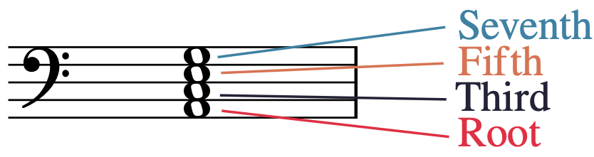

Open Music Theory：繁體中文版
七和弦
本章著重於七和弦，即四個音可依三度疊置的和弦。
查看英文原文
Key Takeaways
- A seventh chord is a four-note chord whose notes can be arranged in thirds. A seventh chord can always be "stacked" so that its notes are either on all lines or all spaces.
- When a seventh chord is stacked in thirds, the lowest note is called the root, the lower middle note is called the third, the upper middle note is called the fifth, and the highest note is called the seventh, which is sometimes called the "chordal" seventh to distinguish it from the seventh scale degree.
- There are five common qualities of seventh chord. These qualities are the major-major seventh chord, major-minor seventh chord, minor-minor seventh chord, half-diminished seventh chord, and fully diminished seventh chord.
- There is another common way of naming seventh chords: the major-major seventh chord is also often called the major seventh chord, the major-minor seventh chord is also often called the dominant seventh chord, the minor-minor seventh chord is also often called the minor seventh chord, and the fully diminished seventh chord is also often simply called the diminished seventh chord.
- Within major and minor keys, seventh chords have particular qualities that correspond to scale degrees. These are the same in every major and minor key, which makes memorizing them useful.
- Seventh chords are identified by their root, quality of triad and seventh, and inversion.
In this chapter, we will focus on seventh chords: four-note chords whose notes can be stacked into thirds.
譜例 1。以旋律與和聲方式記寫的七和弦。
{kind=link}

- Root：根音；
- Third：三音；
- Fifth：五音；
- Seventh：七音。
查看英文原文
Seventh Chords
Like triads, the notes of a seventh chord can always be arranged in thirds, on adjacent lines or spaces of the staff. If a triad in closed spacing looks like a snowperson, then a seventh chord in closed spacing (as in the second measure of Example 1) looks like an extra-long snowperson, with a bottom, two middles, and a head.
Example 1. A seventh chord written melodically and harmonically.
Like in a triad, the lowest note of a seventh chord stacked in closed spacing is called the root, and the other notes are named for their generic intervals above the root, as shown in Example 2: the third, the fifth, and the seventh.
- 根音、三音、五音所形成的三和弦性質（表格第二欄）。
- 根音到七音的七度音程性質（表格第三欄）。
| 七和弦性質 | 三和弦性質 | 七度音程性質 | 和弦符號範例 |
|---|---|---|---|
| 大大七和弦 （大七和弦） | 大三和弦 | 大七度 | Fma7 |
| 大小七和弦 （屬七和弦） | 大三和弦 | 小七度 | F7 |
| 小小七和弦 （小七和弦） | 小三和弦 | 小七度 | Fmi7 |
| 半減七和弦 | 減三和弦 | 小七度 | F∅7 |
| 全減七和弦 （減七和弦） | 減三和弦 | 減七度 | Fo7 |
譜例 3。不同性質的七和弦名稱整理。
前三種七和弦的名稱中，第一個字描述三和弦性質，第二個字描述七度音程的性質：
- 大大七和弦＝大三和弦＋大七度。
- 大小七和弦＝大三和弦＋小七度。
- 小小七和弦＝小三和弦＋小七度。
另外兩種都以減三和弦為基礎，但七度音程的性質不同：
- 半減七和弦＝減三和弦＋小七度。
- 全減七和弦＝減三和弦＋減七度。
樂理學者常用上述名稱，但還有另一套常見命名法，列於譜例 3第一欄的括號中：
老師可能要求你使用其中一套名稱，也可能混合使用兩套。
譜例 4以五線譜整理上述資訊。
譜例 4。各種七和弦中的三和弦與七度音程性質。
屬七和弦有時會加上半音變化，例如「增」七和弦；詳見〈變化和弦與延伸和弦〉。七和弦根音若帶有變音記號，名稱也必須包含它。例如，B♭mi7 表示由 B♭ 小三和弦與小七度構成的七和弦；G♯ma7 則表示由 G♯ 大三和弦與大七度構成的七和弦。
和弦符號記法中，如果七和弦最低音不是根音，就加上斜線，再以大寫字母標示低音聲部的音級。譜例 5是 G 半減七和弦（G∅7）：第一小節為原位，第二小節將七音 F 放在低音，因此寫成 G∅7/F。〈轉位〉會進一步討論。
譜例 5。兩個七和弦。
查看英文原文
Seventh Chord Qualities and Nomenclature
Example 3 lists the five most common qualities of seventh chord: major-major, major-minor, minor-minor, half-diminished, and fully diminished. These qualities are determined by two factors:
- The quality of the triad created by the root, third, and fifth (shown in the second column)
- The quality of the seventh from the root to the seventh (shown in the third column)
A chord symbol for a seventh chord begins with the letter name of the triad's root followed by an indication of the quality of its triad and seventh. Examples of chord symbols for different seventh chord qualities are given in the last column of Example 3.[1]
| Seventh chord quality | Triad quality | Seventh (interval) quality | Example chord symbol |
|---|---|---|---|
| Major-major seventh chord (Major seventh chord) |
major triad | major seventh | Fma7 |
| Major-minor seventh chord (Dominant seventh chord) |
major triad | minor seventh | F7 |
| Minor-minor seventh chord (Minor seventh chord) |
minor triad | minor seventh | Fmi7 |
| Half-diminished seventh chord | diminished triad | minor seventh | F∅7 |
| Fully diminished seventh chord (Diminished seventh chord) |
diminished triad | diminished seventh | Fo7 |
Example 3. Summary of nomenclature for different qualities of seventh chord.
For the first three qualities of seventh chord, the first word describes the quality of the triad, and the second word describes the quality of the seventh:
- major-major seventh chord = major triad + major seventh
- major-minor seventh chord = major triad + minor seventh
- minor-minor seventh chord = minor triad + minor seventh
The other two qualities are both built on diminished triads but differ in the quality of the seventh:
- half-diminished seventh chord = diminished triad + minor seventh
- fully diminished seventh chord = diminished triad + diminished seventh
Music theorists often use the names described above, but there is also another common way of naming these chords, given in parentheses in the first column of Example 3:
- The major-major seventh chord is also often called the major seventh chord.
- The major-minor seventh chord is also often called the dominant seventh chord.
- The minor-minor seventh chord is also often called the minor seventh chord.
- The fully diminished seventh chord is also often simply called the diminished seventh chord.
- The half-diminished seventh chord does not typically have an alternate name.
Your instructor may have you label these chords using one set of terminology or the other, or a mix of both.
Example 4 summarizes all this information in music notation.
Example 4. The qualities of sevenths and triads in various seventh chord types.
Sometimes dominant seventh chords have chromatic alterations (e.g. the "augmented" seventh chord); you can read more about this in Altered and Extended Chords. Don't forget that when the root of a seventh chord has an accidental, you add that accidental into its name. For example, B♭mi7 is the chord symbol for a seventh chord with a B♭ minor triad and a minor seventh. Likewise, a G♯ma7 is the chord symbol for a seventh chord with a G♯ major triad and a major seventh.
In chord-symbol notation, if a pitch class other than the chord's root is the lowest note in a seventh chord, then a slash is added, followed by a capital letter denoting the pitch class in the bass (lowest) voice. Example 5 shows a G half-diminished seventh chord (G∅7). In the first measure, the chord appears in first position; in the second measure, the chord's seventh (F) is in the bass voice, so the chord symbol is written as G∅7/F. This topic will be explored more in the chapter Inversion .
Example 5. Two seventh chords.
仔細聆聽譜例 4中不同性質的七和弦。學習辨識它們的聲音時，常會聯想某種表情：大大七和弦可能像「快樂而有爵士感」，大小七和弦像「尚未解決」，強烈想接到另一個和弦；小小七和弦像「悲傷而有爵士感」，半減七和弦像「可怕而有爵士感」，全減七和弦則像「非常可怕」。
查看英文原文
Listening to Seventh Chords
Listen carefully to the different qualities of seventh chord in Example 4. It is common to pair expressive qualities with seventh chords when learning what they sound like. You might think of major-major seventh chords as sounding "happy and jazzy," major-minor seventh chords as sounding "unresolved" (like they strongly need to move to another chord), minor-minor seventh chords as "sad and jazzy," half-diminished seventh chords as "scary and jazzy," and fully diminished seventh chords as "very scary."
大音階的每個音都可以建立七和弦。譜例 6以 G 大調示範：以 do [latex](\hat1)[/latex] 與 fa [latex](\hat4)[/latex] 為根音的七和弦，由大三和弦與大七度構成；以 sol [latex](\hat5)[/latex] 為根音的則由大三和弦與小七度構成，也就是屬七和弦。以 re、mi、la [latex](\hat2,\hat3,\hat6)[/latex] 為根音的七和弦，由小三和弦與小七度構成；以 ti [latex](\hat7)[/latex] 為根音的是半減七和弦，由減三和弦與小七度構成。不同大調都遵循相同的七和弦性質模式，因此記熟很有幫助。
譜例 6。大調中的七和弦性質。
小音階的每個音也可以建立七和弦。譜例 7以 G 小調示範，其中以 sol [latex](\hat5)[/latex] 為根音，以及以 ti [latex](\hat7)[/latex] 為根音的七和弦，各只列一種。這兩種七和弦常使用升高後的導音，也就是 ti 而非 te [latex](\uparrow\hat7[/latex] 而非 [latex]\hat7)[/latex]。譜例 7中，以 do、fa [latex](\hat1,\hat4)[/latex] 為根音的七和弦，由小三和弦與小七度構成；以 sol [latex](\hat5)[/latex] 為根音、包含升高後導音的七和弦，由大三和弦與小七度構成，也就是屬七和弦。以 me、le [latex](\hat3,\hat6)[/latex] 為根音的七和弦，由大三和弦與大七度構成；以 re [latex](\hat2)[/latex] 為根音的是半減七和弦，由減三和弦與小七度構成；以 ti [latex](\uparrow\hat7)[/latex] 為根音的是全減七和弦，由減三和弦與減七度構成。
譜例 7。小調中的七和弦性質。
查看英文原文
Seventh Chord Qualities in Major and Minor
Seventh chords can be built on any note of the major scale. As you can see in Example 6, which is in the key of G major, seventh chords built on do [latex](\hat1)[/latex] and fa [latex](\hat4)[/latex] have a major triad and a major seventh, while seventh chords built on sol [latex](\hat5)[/latex] have a a major triad and a minor seventh (a dominant seventh chord). Seventh chords built on re, mi, and la [latex](\hat2,\ \hat3,[/latex] and [latex]\hat6)[/latex] have a minor triad and a minor seventh, while seventh chords built on ti [latex](\hat7)[/latex] are half-diminished—they have a diminished triad and a minor seventh. These seventh chord qualities do not change in different keys; consequently, memorizing these qualities can be very useful.
Example 6. Qualities of seventh chords in major keys.
Seventh chords can also be built on any note of the minor scale. Example 7, which is in the key of G minor, contains only one seventh chord built on sol [latex](\hat5)[/latex] and one on ti [latex](\hat7)[/latex]. It is common for these seventh chords to contain the raised leading tone—ti instead of te [latex](\uparrow\hat7[/latex] instead of [latex]\hat7)[/latex]. In Example 7, seventh chords built on do and fa [latex](\hat1[/latex] and [latex]\hat4)[/latex] have a minor triad and a minor seventh, while seventh chords build on sol [latex](\hat5)[/latex] with the raised leading tone have a major triad and a minor seventh (a dominant seventh chord). Seventh chords built on me and le [latex](\hat3[/latex] and [latex]\hat6)[/latex] have a major triad and a major seventh, while those built on re [latex](\hat2)[/latex] are half-diminished (containing a diminished triad and a minor seventh), and those built on ti [latex](\uparrow\hat7)[/latex] are fully diminished (containing a diminished triad and a diminished seventh).
Example 7. Qualities of seventh chords in minor keys.
依和弦符號建立七和弦時，要先知道根音與性質；轉位會在下一章〈轉位〉討論。七和弦的記寫步驟與三和弦相似，先從大大七和弦開始：
- 在五線譜上寫出根音。
- 在根音上方三度、五度、七度寫出音符，也就是畫出「加長的雪人」。
- 想出或寫出以根音為主音的大調調號。
- 將調號中適用於和弦音的變音記號加上去，形成大三和弦與大七度。
若要寫其他性質的七和弦，再依需要加上其他變音記號，改變三音、五音或七音。
譜例 8以 D 大大七和弦（Dma7）示範：
{kind=link}
- 在五線譜上寫出根音 D。
- 畫出加長的雪人，加入 F、A、C，分別位於 D 上方三度、五度與七度。
- 回想 D 大調的調號：F♯、C♯ 兩個升記號。
- 在 F、C 左側加上升記號（♯），因為 D 大調使用 F♯ 與 C♯。
下一個和弦的性質需要額外的變音記號，因此步驟會多一些。譜例 9示範 A♭ 全減七和弦（A♭o7）的記寫過程：
{kind=link}
- 先寫 A♭，因為它是和弦根音。
- 畫出加長的雪人，加入 C、E、G，分別位於 A♭ 上方三度、五度與七度。
- 回想 A♭ 大調的調號：B♭、E♭、A♭、D♭ 四個降記號。
- 將 E 改為 E♭，因為它在 A♭ 大調的調號中。
- 此時已寫出大大七和弦，但目標是全減七和弦，因此還要加入 A♭ 大調調號以外的變音記號：
- 將 C 與 E♭ 各降低半音，成為 C♭ 與 E𝄫，把大三和弦改為減三和弦。
- 要將七度從大七度改為減七度，必須降低兩個半音，因此將 G 改為 G𝄫。
對初學者而言，這些步驟是可靠的七和弦記寫方法，但需要花些時間。若能在樂器上練熟各種性質的七和弦，就能逐漸直接掌握和弦音，不必每次都按步驟推算。
查看英文原文
Spelling Seventh Chords
To build a seventh chord from a chord symbol, you need to be aware of its root and quality—inversion is discussed in the next chapter, titled Inversion. The steps for spelling a seventh chord are similar to the steps for drawing a triad. Let's start with spelling a major-major seventh chord:
- Draw the root on the staff.
- Draw notes a third, fifth, and seventh above the root (i.e., draw an "extra-long" snowperson).
- Think of (or write down) the major key signature of the triad's root.
- Write any accidentals from the key signature that apply to the notes in the chord, creating a major triad and a major seventh.
For any other quality of seventh chord, add additional accidentals to alter the chord's third, fifth, and/or seventh when appropriate.
Example 8 shows this process for a D major-major seventh chord (Dma7):
- The note D, the chord's root, is drawn on the staff.
- An extra-long snowperson is drawn—an F, A, and C, the notes a generic third, fifth, and seventh above the D.
- The key signature of D major has been recalled. D major has two sharps, F♯ and C♯.
- Sharps (♯) have been added to the left of the F and the C, because F♯ and C♯ are in the key signature of D major.
The quality of the next chord will require us to write additional accidentals, so the process has a couple more steps. Example 9 shows the process for an A♭ fully diminished seventh chord (A♭o7):
- The note A♭ is written because it is the root of the triad.
- An extra-long snowperson is drawn: C, E, and G are added because they are a generic third, fifth, and seventh, respectively, above A♭.
- The key signature of A♭ major is recalled. A♭ major has four flats: B♭, E♭, A♭, and D♭.
- E♭ is added, because it is in the key signature of A♭ major.
- We have now followed the process to spell a major-major seventh chord, but we want a fully diminished seventh chord, which means adding accidentals that are not in the key signature of A♭ major:
- C and E♭ are lowered by a half step to C♭ and E𝄫 to change the triad from major to diminished.
- To change the chord's seventh from major to diminished, it needs to be lowered by two half steps, from G to G𝄫.
Following these steps is a reliable way for beginners to spell seventh chords, but it’s a time-consuming process. If you practice playing all of the qualities of seventh chords on an instrument until you are fluent in them, your knowledge of these notes will become more automatic without using this process.
- 找出並寫下根音。
- 想像以根音為主音的大調調號。
- 判斷並寫下三和弦部分的性質。
- 判斷並寫下七度音程的性質。
譜例 10列出一個原位七和弦，供辨識練習。
譜例 10。供辨識練習的原位七和弦。
辨識這個七和弦：
- 和弦是原位，因此最低音 C♯ 就是根音。
- C♯ 大調有七個升記號，也就是每個音都升高。E、G 在 C♯ 大調中本應帶升記號，但此處都是自然音，相當於各降低半音，因此三和弦部分是減三和弦。
- 七音 B 在 C♯ 大調中也應帶升記號，但此處是自然音。大七度縮小半音，就變成小七度。
- 減三和弦加小七度，形成半減七和弦，因此這是 C♯ 半減七和弦（C♯∅7）。
七和弦的低音若因重升或重降記號而對應假想調號，可以依〈音程〉章最後一節的方法，用等音關係重新拼寫七和弦。
譜例 11。兩個採開放排列、含重複音的七和弦。
以下練習可幫助你辨識七和弦：
- Cohn, Richard 等。2001。〈Harmony〉（和聲）。Grove Music Online。https://doi.org/10.1093/gmo/9781561592630.article.50818。
- Lahdelma, Imre 與 Tuomas Eerola。2014。〈Single Chords Convey Distinct Emotional Qualities to Both Naïve and Expert Listeners〉（單一和弦向一般與專業聽者傳達不同的情緒特質）。Psychology of Music 44/1：37–54。
- Lambert, Philip。2021。〈Half-Diminished Seventh Chords and Their Contexts〉（半減七和弦及其脈絡）。Music Analysis 39/3：277–313。https://doi.org/10.1111/musa.12154。
- McGrain, Mark。1986。Music Notation（音樂記譜法）。波士頓：Berklee Press。
- Palmer, Willard A. 等。1994。The Complete Book of Scales, Chords, Arpeggios & Cadences（音階、和弦、琶音與終止式全書）。加州 Van Nuys：Alfred Publishing。
- Roemer, Clinton。1985。The Art of Music Copying: The Preparation of Music for Performance（抄譜的藝術：為演出準備樂譜），第 2 版。Sherman Oaks：Roerick Music Company。
媒體出處與授權
- 〈和弦成員〉© Megan Lavengood，採用 CC BY-NC-SA（姓名標示—非商業性—相同方式分享）授權。
- 〈D 大七和弦〉© Megan Lavengood，採用 CC BY-NC-SA（姓名標示—非商業性—相同方式分享）授權。
- 〈A♭ 減七和弦〉© Megan Lavengood，採用 CC BY-NC-SA（姓名標示—非商業性—相同方式分享）授權。
查看英文原文
Identifying Seventh Chords, Doubling, and Spacing
Like triads, seventh chords are also identified according to their root, quality, and inversion; inversion is discussed in the Inversion chapter, so the examples here will be in root position.
- Identify and write its root.
- Imagine the major key signature of its root.
- Identify and write its quality of its triad.
- Identify and write its quality of its seventh.
Example 10 shows a seventh chord in root position for the process of identification.
Example 10. A seventh chord in root position for identification.
To identify this seventh chord:
- Because the chord is in root position, the root is the lowest note, C♯.
- The key of C♯ major has seven sharps (every note is sharp). E and G would be sharp in the key of C♯ major, but we see that both of those notes are natural instead—lowered by a half step—making the triad diminished.
- The chord's seventh, B, would also be sharp in C♯ major, but it is natural here. When a major seventh is made a half step smaller, it becomes a minor seventh.
- A diminished triad and a minor seventh form a half-diminished seventh chord; therefore, this is a C♯ half-diminished seventh chord (C♯∅7).
If the bottom note of a seventh chord has an imaginary key signature (because there is a double accidental that applies to it), use enharmonic equivalence to respell the seventh chord, following the process outlined in the last section of the Intervals chapter.
Like with triads, a seventh chord’s identification is not affected by the doubling of notes or open spacing of notes (even across multiple clefs). Example 11 shows two different seventh chords in open spacing with doublings. Simply imagine or write the notes of seventh chords in closed spacing without any doublings to identify these chords, as we did previously.
Example 11. Two seventh chords with doublings in open spacing.
You can practice identifying seventh chords with the following exercise:
- Cohn, Richard, et al. 2001. “Harmony.” Grove Music Online. https://doi.org/10.1093/gmo/9781561592630.article.50818.
- Lahdelma, Imre and Tuomas Eerola. 2014. "Single Chords Convey Distinct Emotional Qualities to Both Naïve and Expert Listeners." Psychology of Music 44/1: 37–54.
- Lambert, Philip. 2021. "Half-Diminished Seventh Chords and Their Contexts." Music Analysis 39/3: 277–313. https://doi.org/10.1111/musa.12154.
- McGrain, Mark. 1986. Music Notation. Boston: Berklee Press.
- Palmer, Willard A. et al. 1994. The Complete Book of Scales, Chords, Arpeggios & Cadences. Van Nuys, CA: Alfred Publishing.
- Roemer, Clinton. 1985. The Art of Music Copying: The Preparation of Music for Performance, 2nd edition. Sherman Oaks: Roerick Music Company.
- Seventh Chords (musictheory.net)
- Understanding Seventh Chords in Music (Hello Music Theory)
- Introduction to Seventh Chords (Robert Hutchinson)
- Seventh Chords (Kaitlin Bove)
- Seventh Chords (Music Theory Academy)
- Seventh Chords For Dummies (YouTube)
- Seventh Chords - Music Theory Crash Course (YouTube)
- Seventh Chord Ear Training (teoria)
- Chord Ear Training (musictheory.net)
- Chord Ear Training (Tone Savvy)
- Seventh Chord Construction (.pdf, .pdf, .pdf), p. 1 .pdf), pp. 1–2 (.pdf)
- Identifying Root Position Seventh Chords, pp. 1–2 (.pdf), p. 9 (.pdf)
- Seventh Chords A (.pdf, .mscz). Asks students to identify 10 root-position closed-spacing chords with a chord symbol and write 10 chords in root position from a chord symbol. Includes C clefs.
- Seventh Chords B (.pdf, .mscz). Asks students to identify 10 root-position closed-spacing chords with a chord symbol and write 10 chords in root position from a chord symbol. Includes C clefs.
- Seventh Chords C (.pdf, .mscz). Asks students to identify 10 root-position closed-spacing chords with a chord symbol and write 10 chords in root position from a chord symbol. Includes C clefs.
- Seventh Chords D (.pdf, .mscz). Treble and bass clefs only. Asks students to identify 20 root-position closed-spacing chords with a chord symbol, write 20 chords in root position from a chord symbol, and identify chords by chord symbol in a short piano-and-voice excerpt.
Media Attributions
- Chord members © Megan Lavengood is licensed under a CC BY-NC-SA (Attribution NonCommercial ShareAlike) license
- Dmaj © Megan Lavengood is licensed under a CC BY-NC-SA (Attribution NonCommercial ShareAlike) license
- Abdim7 © Megan Lavengood is licensed under a CC BY-NC-SA (Attribution NonCommercial ShareAlike) license
- These chord symbols reflect those used in Open Music Theory, but you may come across others in your studies. See Chord Symbols for a more thorough explanation of these variations. ↵